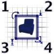
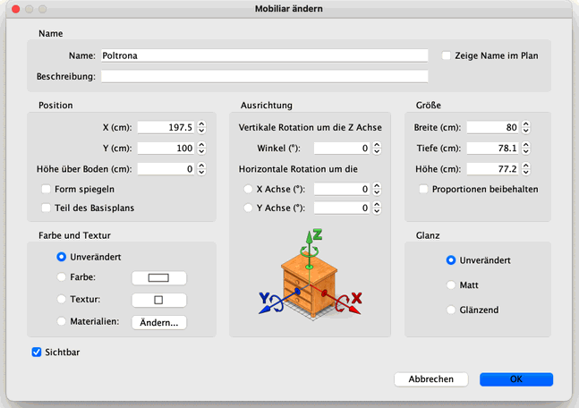
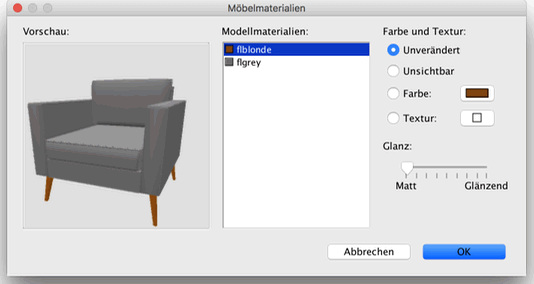

| Mobiliar ändern | |||
Sie können die Position, die Größe und die Winkel von Mobiliar ändern.
Entweder mit der Maus oder über das Mobiliar > ändern… Menü. Sperren Sie den Wohnungsplan über Plan > Plan sperren um nicht versehentlich Mobiliare und andere Items auf dem Wohnungsplan gleichzeitig auszuwählen. Dies verhindert die Auswahl von Wänden, Räumen, Bemaßungen, Texten, Türen und Fenstern, und erlaubt Ihnen so, Mobiliar leichter zu arrangieren. Ein zweiter Klick auf Plan sperren oder das hinzufügen eines weiteren Gegenstandes zum Wohnungsplan hebt die Sperrung des Wohnungsplanes auf. Um die ausgewählten Mobiliare nun zu bewegen, bewegen Sie den Mauszeiger über eines der Mobiliare, drücken sie die linke Maustaste und bewegen die Maus zu der Stelle, wo das Mobiliar stehen soll. Anschließend lassen Sie die Maus los (Drag&Drop). Sie können außerdem auch die Pfeiltasten benutzen, um Ihr Mobiliar zu verschieben. Wenn sie ein Mobiliar ausgewählt haben und der Mauszeiger ist über einer Wand wird das Mobiliar entsprechend der Ausrichtung und der Dicke der Wand gedreht und skaliert wenn es sich um eine Tür oder ein Fenster handelt. Andere Mobiliare werden so ausgerichtet, dass die Rückseite entsprechend der Wand ausgerichtet ist. Sollten Sie eine Auswahl von mehreren Mobiliaren als ein einziges Mobiliar behandeln wollen (Zum Beispiel einen Tisch mit Stühlen), wählen Sie Mobiliar > Gruppieren aus dem Menü. Wenn ein Mobiliar oder eine Gruppe von Mobiliaren ausgewählt ist, dann können Sie dessen Größe, Höhe über dem Boden und Winkel mit einem der vier Anfasser verändern, die an den Ecken des ausgewählten Objektes erscheinen.  |
|
Wenn der Mauszeiger über einer dieser Ecken ist, verändert er sein Aussehen um Ihnen zu zeigen, dass Sie nun mit Ziehen das entsprechende Attribut des gewählten Objektes verändern können. Während Sie die Maustaste gedrückt halten, wird ein Tooltip angezeigt, der den Wert Ihrer Änderung anzeigt. Das Mobiliar, welches mit der Maus verändert wird, wird parallel im Wohnungsplan und der 3D-Ansicht aktualisiert. Ein Mobiliar kann ebenfalls in einem Dialog verändert werden. Dazu doppelklicken Sie auf ein Mobiliar im Wohnungsplan oder in der Liste, oder in dem Sie Mobiliar > Ändern… auswählen, nachdem Sie ein Mobiliar ausgewählt haben.  In dem Dialog Mobiliar ändern können Sie den Namen des Mobiliars, die Anzeige des Namens im
Wohnungsplan, die
Beschreibung, die X- und Y-Koordinate seines Mittelpunkts, seine Höhe über dem Boden, ob es gespiegelt wird, ob
es Teil des BasisWohnungsplans ist, seine Breite, Tiefe und Höhe, die Stellung von beweglichen Teilen
die Farbe, Textur, Materialien und den Glanz, die Sichtbarkeit, die Rotationswinkelsowie den Glanzgrad ändern.
Es ist nicht möglich Türen, Fenster, Treppen und Gruppen auf der horizontalen zu rotieren.  Der Bereich zum Bearbeiten von Mobiliarmaterialien zeigt die Liste der bearbeitbaren Materialien sowie eine 3D-Vorschau Ihrer Farb- und Texturänderungen an, da Materialnamen nicht immer intuitiv verständlich oder übersetzt sind (wie bone2 an Stelle von Matratze oder flyellow an Stelle von Rahmen in der vorherigen Abbildung). Fall nötig können sie mehr als ein Material in der Liste anwählen und ändern. Sie können das Objekt in der 3D-Vorschau auch mit der Maus drehen. Wenn sie in der Vorschau auf ein Teil klicken wird das entsprechende Material in der Liste ausgewählt. |
|